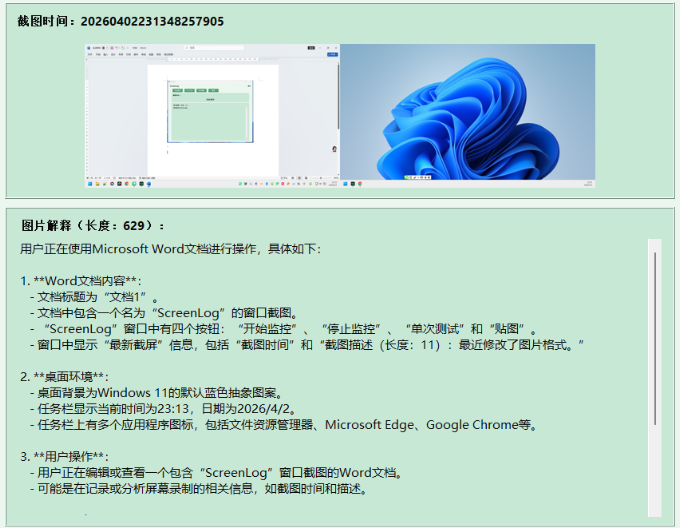
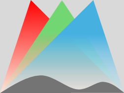
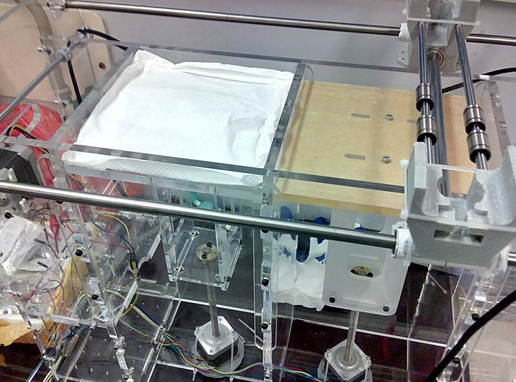

Software

Xiangpeng CAO
Windows tool for screenshot-based activity monitoring, LLM analysis, and automatic daily log generation.
Open-source software | 2026 | Code at GitHub
Xiangpeng CAO
A collection of reusable skills, prompts, and workflow templates for research and engineering tasks.
Open-source software | 2026 | Code at GitHub
Hardware

Xiangpeng CAO, Hongzhi CUI
Innovation | 2022 | @Shenzhen University

Xiangpeng CAO, Zongjin LI
Phd Thesis | 2017 | @HKUST | Arduino code at Github